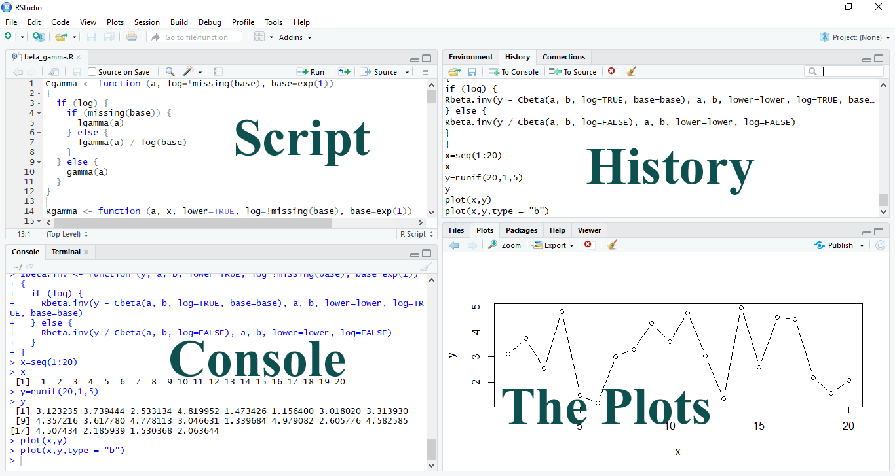

R is a free-to-use and open-sourced programming language that is widely used for statistical as well as various Socio-Economical studies.
In this course we will be using two different applications,
R can be downloaded from the following link:
https://cran.r-project.org/bin/windows/base/
“RStudio is a set of integrated tools designed to help you be more productive with R. It includes a console, syntax-highlighting editor that supports direct code execution, and a variety of robust tools for plotting, viewing history, debugging and managing your workspace.”
R Studio can be downloaded from the following link:
https://www.rstudio.com/products/rstudio/download/
Though we will use R studio for our calculations, but R is essential for proper functioning of R studio.
R Studio by default open 4 different windows.

The Script window can be considered as a notepad where we can write our codes which can be edited according to requirement. Another advantage of writing our code in script is that we can save our script as a text file with .R extension.
The Console window is where the actual programming is executed and the outcomes are shown.
We can type Ctrl + Enter to run a particular code from the script window without typing it in the console window.
R Can be think as an advance calculator which can handle all basic calculations:
2+6[1] 83-1[1] 22*6[1] 1218/2[1] 92^4[1] 16
+Addition
-Subtraction
*Multiplication
/Division
^to-the-power
There are some pre-defined functions in R that can be used to do some other arithmetic operations. For example:
sum(2,3,4,5,6,8) # will give the sum of all the numbers## [1] 28factorial(5) # will give the value of 5!## [1] 120sqrt(16) # will give the square root of 16## [1] 4abs(-5) # will give the absolute value of the number## [1] 5exp(5) # will calculate exponential of 5## [1] 148.4132log(2) # log of 2 to the base e## [1] 0.6931472log10(100) # log of 100 to the base 10## [1] 2# will round off the number/vector to given number of decimal places.
round(3.2666666,2) ## [1] 3.27# truncates the decimal part of a number/vector.
trunc(3.266666) ## [1] 3letters # the vector of small letters## [1] "a" "b" "c" "d" "e" "f" "g" "h" "i" "j" "k" "l" "m" "n" "o" "p" "q"
## [18] "r" "s" "t" "u" "v" "w" "x" "y" "z"LETTERS # the vector of CAPITAL letters.## [1] "A" "B" "C" "D" "E" "F" "G" "H" "I" "J" "K" "L" "M" "N" "O" "P" "Q"
## [18] "R" "S" "T" "U" "V" "W" "X" "Y" "Z"letters[1:4] # Selecting the first 4 small letters.## [1] "a" "b" "c" "d"LETTERS[1:4] # Selecting the first four capital letters.## [1] "A" "B" "C" "D"Copyright © 2018 Saurav Sarma. All rights reserved.